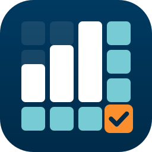
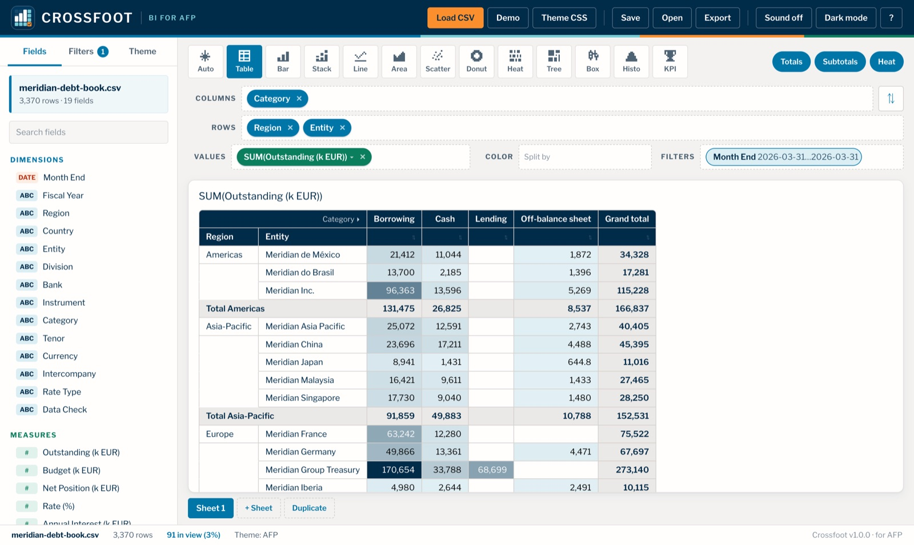
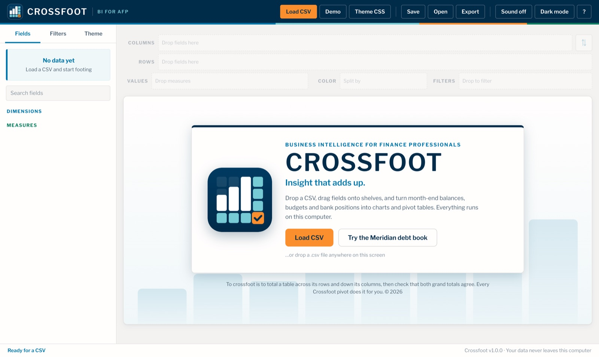
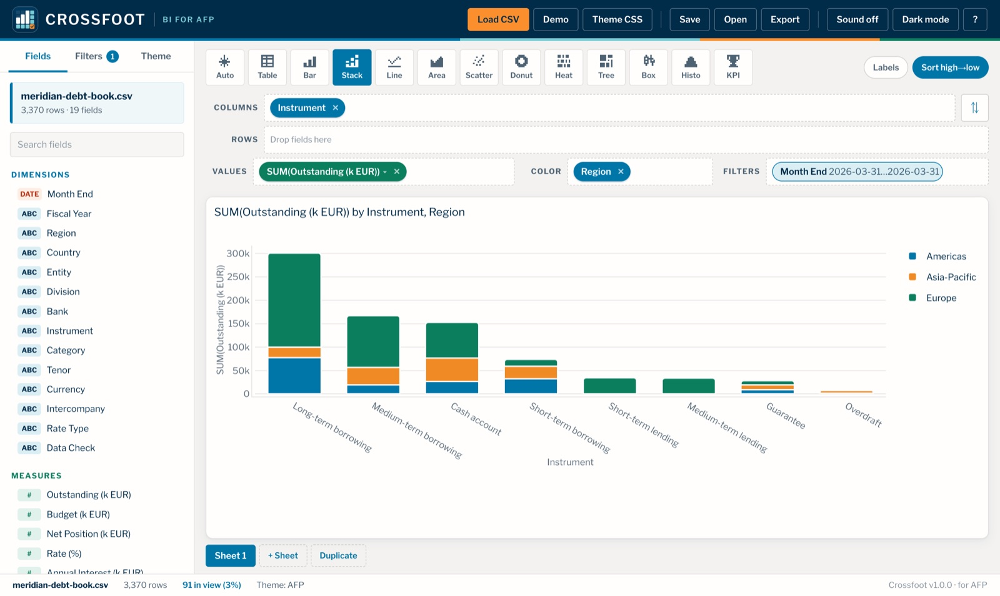
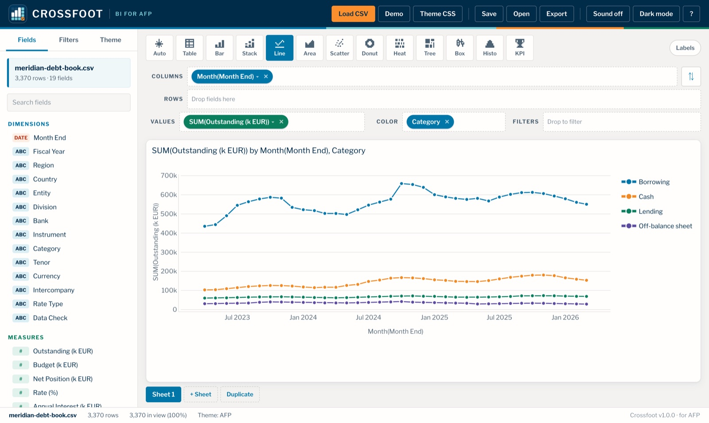
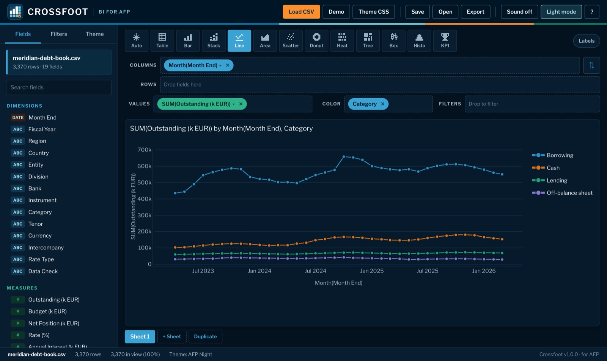

Drag & drop shelves
Pick up a field on the left, drop it on Columns, Rows, Values, Color or Filters. The view redraws as soon as you let go.
Business intelligence for finance professionals
Crossfoot turns a CSV of balances, budgets and bank positions into charts and pivot tables. Drag, drop, cross-check. It runs on your own computer, so the ledger stays there.
Works offline · Mac app, or any browser on Windows & Linux · No upload, no account


Features
and nothing you have to configure.
Pick up a field on the left, drop it on Columns, Rows, Values, Color or Filters. The view redraws as soon as you let go.
Several levels of rows and columns, subtotals, grand totals in both directions, heat shading and click-to-sort. Hit ⇅ to swap rows and columns.
Bar, stacked, line, area, scatter, donut, heatmap, treemap, box plot, histogram and KPI tiles. Auto picks a sensible one. Export any view as PNG, SVG or CSV.
Rates, percentages and ratios start as Average, not Sum. Month-end dates get month grains. Decimal commas and thousands separators are read correctly.
Searchable checklists for entities and banks, from/to ranges for amounts and dates. Pin one month end to read balances as a snapshot.
The AFP theme is built in, with a dark twin, AFP Night. Presenting to a board or a bank? Load a .css file with their colours and fonts.
Keep several sheets side by side. Crossfoot remembers your layout for each file and saves it, with filters and theme, to a small .crossfoot.json workbook.
Crossfoot runs entirely in your browser or Mac app. No server, no account, no upload. Treasury data never leaves your computer.
How it works
Click Load CSV or drop a file anywhere on the window. Crossfoot sorts the columns into Dimensions (entities, banks, dates) and Measures (amounts, rates).

Instrument to Columns, Outstanding to Values, Region to Color, and you have a stacked bar chart of the debt book. Click a pill to switch Sum to Average, or Year to Month.

Choose Table for a pivot, stack dimensions on rows and columns, turn on heat shading, and drop fields on Filters to zoom in. Export the result for the management memo or the deck.
Where it fits
In the AFP sessions, finance analytics runs as a cycle. Crossfoot covers the step where business intelligence adds the most: slicing a clean, keyed finance table by entity, bank, instrument and month.
debt_clean.csv (50,000 rows load in about a second).Themes
The interface follows the AFP look. Charts and tables follow a theme, which is a CSS file: AFP, AFP Night, or your own. Both built-in palettes are checked for colour-blind separation and contrast.


/* every line is optional */
@import url("https://fonts.googleapis.com/css2?family=Inter");
:root {
--crossfoot-font-family: "Inter", sans-serif;
--crossfoot-font-size: 13px;
--crossfoot-text-color: #002b49;
--crossfoot-background: #ffffff;
--crossfoot-grid-color: #e4e1dd;
--crossfoot-palette: #0076a8, #f08a24, #0b7e5e, #5b4a9e;
--crossfoot-sequential: #e3f1f6, #002b49;
--crossfoot-table-header-background: #002b49;
--crossfoot-table-header-color: #ffffff;
}.css file on the window.--crossfoot-* variables, plus plain font-family, color and background on :root or body.@import or @font-face. If Franklin Gothic is installed, Crossfoot uses it; otherwise the embedded Libre Franklin.Examples: afp.css · afp-night.css · corporate.css · arcade.css · editorial-webfont.css
Gallery
All screenshots use the fictional Meridian Components debt book that ships with Crossfoot: 36 month ends of made-up cash, borrowing, lending and guarantee positions for 15 entities, 7 banks and the in-house bank, in k EUR.
Download
Version 1.0.0. The native Mac app, or a zip that runs in any browser on Windows, Linux or Mac.
macOS 13 Ventura or later · Apple silicon & Intel
Download .dmgCrossfoot isn't notarized by Apple yet, so macOS asks you to confirm once. Click Done, open System Settings › Privacy & Security, scroll down and click Open Anyway next to Crossfoot. You won't be asked again.
Windows, Linux or Mac · Chrome, Edge, Firefox or Safari 16.4+
Download .zipindex.html in the Crossfoot folder. It opens in your browser, no install needed.Both versions run entirely on your computer. No internet connection, no account, and your data never leaves your machine.
The app, the fictional Meridian debt book (samples/), example theme files (themes/), and offline copies of plotly.js and the Libre Franklin font.
Demo CSV · Use it in the browser (your files stay on your computer there too).
In accounting, to foot a column is to total it, and to crossfoot a table is to total it across its rows as well, then check that both grand totals agree. It is the oldest control in finance, and every pivot table does it. The icon shows exactly that: data columns rising like a bar chart, a totals row and a totals column, and the grand total where they cross, checked.